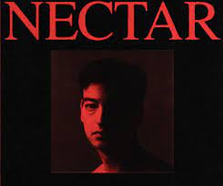
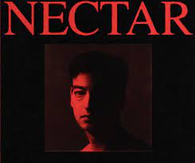

作品介紹
以PINK GUY名義發布
Pink Guy(2014)album
Pink Season(2015)album
以JOJI名義發布
Chloe Burbank Volume 1(2015)album
In Tongues(2017)EP

Ballads 1(2019)album
JOJI-Test Drive audio
Nectar(2020)album
Smithereens(2022)album
JOJI-Die For You MV
憂鬱才子A.K.A. PINK GUY
Pink Guy(2014)album
Pink Season(2015)album
Chloe Burbank Volume 1(2015)album
In Tongues(2017)EP
Ballads 1(2019)album
JOJI-Test Drive audio
Nectar(2020)album
Smithereens(2022)album
JOJI-Die For You MV